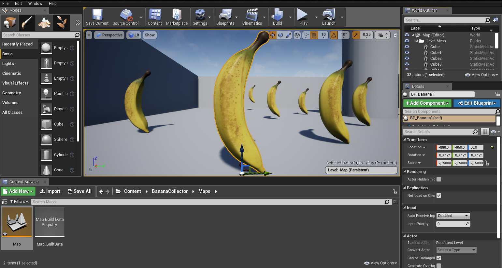
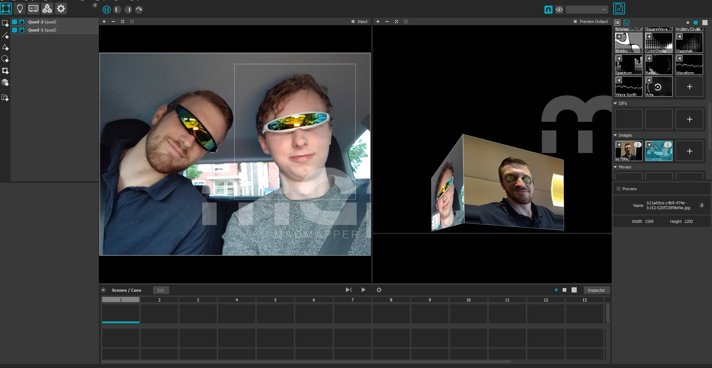

In deze opdracht moest in met Unreal Engine een banaan op een platform laten draaien. Door gebruik te maken van blueprints in combinatie met de verschillende objecten. Is het mij gelukt om de opdracht succesvol uit te voeren.
Banana Game
Screenshot

Uitleg
In deze opdracht heb ik een game gemaakt waarin het rode vierkantje bananen moet verzamelen. Dit spel heb ik gemaakt met behulp van de tutorial die door school aangeraden werd.
Madmapper

Uitleg
Naast de Unreal Engine opdracht moesten we ook werken met het programma MadMapper. Deze software is gemaakt om het voor iedereen mogelijk te maken om met behulp van een projector, spatial augmented reality te maken. In de bovenstaande video kan gezien worden hoe ik samen met mijn klasgenoten experimenteer met de verschillende mogelijkheden die MadMapper te bieden heeft. Met deze software heb ik op verschillende voorwerpen zoals een gezicht, kubus en een bal geprojecteerd. Met wat oefening kreeg ik het voor elkaar om verschillende gezichten precies op de voorwerpen te projecteren. Daarnaast kan in de bovenstaande video gezien worden dat wij de geprojecteerde beelden geanimeerd op basis van het omgevingsgeluid gemaakt hadden.